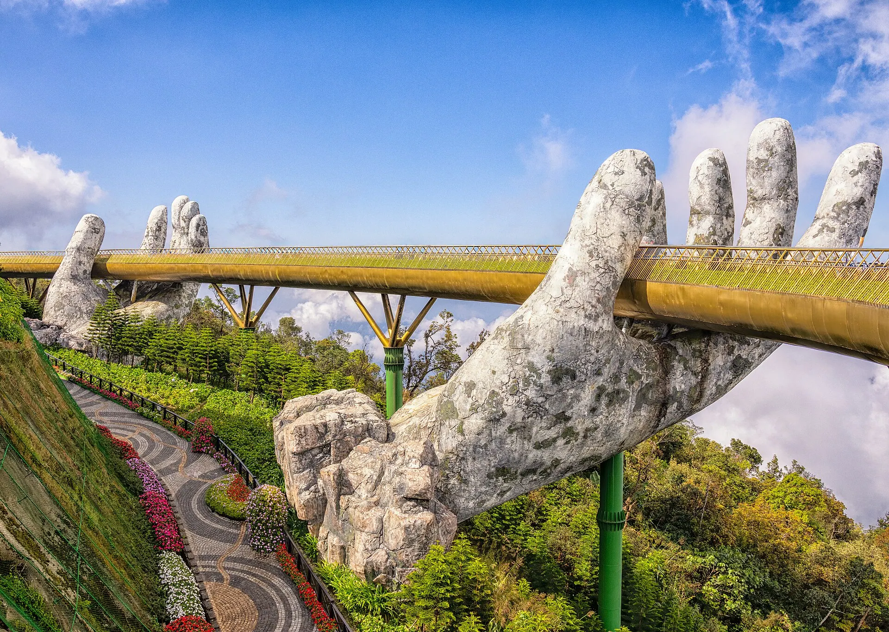

Mì Quảng
Turmeric noodles with little broth, shrimp, pork and crispy sesame crackers.

Da Nang combines sea, mountains and a modern city. My Khe beach has been named one of the most attractive beaches on the planet, the Golden Bridge at Ba Na Hills is world-famous and the Dragon Bridge breathes fire every weekend.
Loading weather...
Tap a month to see if it's a good time to go
Turmeric noodles with little broth, shrimp, pork and crispy sesame crackers.
Boiled pork with wild greens, dipped in fermented anchovy sauce.
Soft Da Nang rice cakes with sweet fish sauce and dried shrimp.
Small, crispy Central-style pancakes dipped in liver sauce.
Mi Quang with shrimp & pork, chicken or frog
19–21 Trần Bình Trọng, Hải ChâuRice paper rolls with boiled pork
4 Lê Duẩn, Hải ChâuSeafood by My Khe beach
Võ Nguyên Giáp, Sơn TràDa Nang fish-cake noodle soup
319 Hùng Vương, Hải ChâuIndicative prices per person. Tap an address to open Google Maps for opening hours and the latest reviews.
A record-breaking cable car to the Golden Bridge and French Village.
Swim, paddleboard or surf in the early morning.
Fire and water shows at 9 pm every Saturday and Sunday.
The "greatest pass under heaven" on the way to Hue.
500k–1.8M / night
Sea views, close to seafood spots.
400k–1.5M / night
See the Dragon Bridge, near Han and Con markets.
2M–6M / night
Private beach resorts.
Da Nang Airport (DAD) is just ~3 km from the centre, taxi/Grab ~80–120k VND. Da Nang Station is on the North–South line.
Indicative room rates for 2 people per night; higher at Tet, holidays and weekends. Việt Travel earns no commission from booking sites.
Việt Travel · Da Nang · Best time: March – August
Take the cable car up Ba Na and visit the Golden Bridge early.
French Village, Le Jardin flower garden and Fantasy Park.
Back down for mì Quảng and seaside seafood.
Swim at My Khe and visit Linh Ung Pagoda on Son Tra.
Marble Mountains and Non Nuoc stone village.
Watch the Dragon Bridge breathe fire (weekend evenings) and Son Tra night market.
Ride the Hai Van pass by motorbike and stop in Lang Co.
Pork rolled in rice paper and coffee overlooking the Han river.
Han river cruise as the city lights up.
End of tour: check out, shop for local specialties and head home.
Take the cable car up Ba Na and visit the Golden Bridge early.
French Village, Le Jardin flower garden and Fantasy Park.
Back down for mì Quảng and seaside seafood.
Swim at My Khe and visit Linh Ung Pagoda on Son Tra.
Marble Mountains and Non Nuoc stone village.
Watch the Dragon Bridge breathe fire (weekend evenings) and Son Tra night market.
Ride the Hai Van pass by motorbike and stop in Lang Co.
Pork rolled in rice paper and coffee overlooking the Han river.
Han river cruise as the city lights up.
Head to Hoi An: Tra Que vegetable village and Bay Mau coconut forest.
The Covered Bridge, Fujian Assembly Hall and Tan Ky house.
Release lanterns on the Hoai river and eat cao lầu.
End of tour: check out, shop for local specialties and head home.
Take the cable car up Ba Na and visit the Golden Bridge early.
French Village, Le Jardin flower garden and Fantasy Park.
Back down for mì Quảng and seaside seafood.
Swim at My Khe and visit Linh Ung Pagoda on Son Tra.
Marble Mountains and Non Nuoc stone village.
Watch the Dragon Bridge breathe fire (weekend evenings) and Son Tra night market.
Ride the Hai Van pass by motorbike and stop in Lang Co.
Pork rolled in rice paper and coffee overlooking the Han river.
Han river cruise as the city lights up.
Head to Hoi An: Tra Que vegetable village and Bay Mau coconut forest.
The Covered Bridge, Fujian Assembly Hall and Tan Ky house.
Release lanterns on the Hoai river and eat cao lầu.
Speedboat to Cu Lao Cham for snorkelling.
Swim at Chong beach and visit Bai Lang fishing village.
Back in Da Nang, buy beef sausage and dried squid as gifts.
End of tour: check out, shop for local specialties and head home.
Excludes flights/transport to Da Nang. Prices are indicative and vary by season.
Visiting more than one place? Combine Da Nang with other destinations.